A história da Volkswagen (VW) começou na Alemanha em 1937, idealizada como o "carro do povo" (Volkswagen) sob o regime nazista para criar um veículo acessível. Projetado por Ferdinand Porsche, o icônico Fusca tornou-se a base da empresa. A marca se expandiu globalmente e chegou ao Brasil em 1953, consolidando-se como uma das maiores produtoras de automóveis do país.
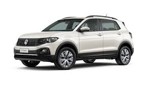
Lançada em 2010 como a primeira picape média da Volkswagen, a Amarok foi projetada para combinar robustez com a dirigibilidade de um carro de passeio. Produzida na Argentina, destacou-se pelo conforto e estabilidade, mas enfrentou críticas iniciais sobre a mecânica 2.0. O modelo foi revolucionado em 2018 com o motor V6, tornando-se referência em potência.
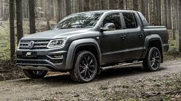
O Volkswagen Gol, lançado em 15 de maio de 1980, foi o líder de vendas no Brasil por 27 anos consecutivos (1987-2014). Projetado para substituir o Fusca, o hatch marcou época com motor a ar e depois a água, consolidando-se com diversas gerações (G1 a G7) e encerrando sua trajetória em 2022 após 42 anos de produção.
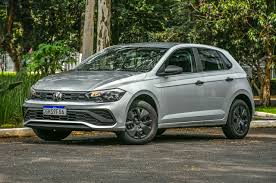
Lançado na Europa em 1975 como uma versão econômica do Audi 50, o Volkswagen Polo consolidou-se como um hatch compacto premium, vendendo mais de 16 milhões de unidades em seis gerações [5.5, 5.6]. No Brasil, destacou-se desde 2002 pela tecnologia (solda a laser no 9N) e hoje se posiciona como um hatch moderno, baseado na plataforma MQB [5.1, 5.13].
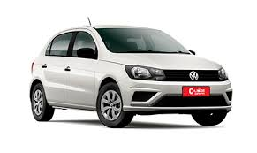
Volkswagen T-Cross é um SUV compacto lançado oficialmente no Brasil em abril de 2019. Produzido em São José dos Pinhais (PR) sobre a plataforma modular MQB A0 (a mesma do Polo), ele se tornou um sucesso de vendas, destacando-se por motores turbo (1.0 TSI e 1.4 TSI), bom espaço interno e pacote tecnológico.
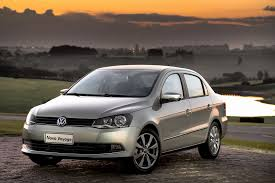
Lançado em julho de 1981, o Volkswagen Voyage foi um marco como a versão sedã da "família BX" (que incluía Gol, Parati e Saveiro). Reconhecido pelo seu porta-malas espaçoso, o modelo brasileiro, com motor refrigerado a água, foi um grande sucesso de vendas, sendo exportado e produzido até 1995, retornando em 2008 para novas gerações até seu fim em 2023.
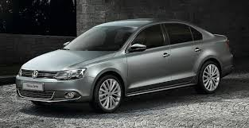
Volkswagen Jetta surgiu em 1979 no Salão de Frankfurt como a versão sedã do Golf, projetado inicialmente para atender à demanda do mercado norte-americano por carros de três volumes. Ao longo de sete gerações, o modelo consolidou-se como um sedã médio global de sucesso, destacando-se pela tecnologia, motorização TSI e produção focada na Alemanha e México.
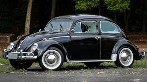
O Volkswagen Fusca, concebido na Alemanha dos anos 1930 por Ferdinand Porsche sob ordens de Adolf Hitler, nasceu como o "carro do povo" (\(Volkswagen\)), focando em acessibilidade e resistência. Tornou-se um ícone global de design, com motor traseiro refrigerado a ar, acumulando mais de 21 milhões de unidades produzidas.Este vídeo conta a história do Fusca, desde sua criação até se tornar um ícone mundial:
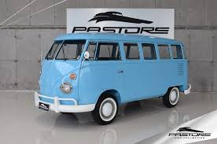
A Volkswagen Kombi, cujo nome deriva do alemão Kombinationsfahrzeug ("veículo combinado"), foi lançada em 1950 na Alemanha. Nascida da ideia do importador holandês Ben Pon e baseada no Fusca, tornou-se um ícone mundial de versatilidade. No Brasil, iniciou produção em 1957, sendo o primeiro carro nacional da marca, e permaneceu em linha até 2013.
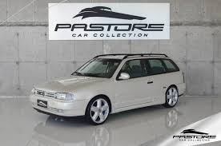
A Volkswagen Parati, lançada em 1982 e produzida até 2012, foi uma icônica station wagon (perua) brasileira derivada do Gol. Conhecida pela versatilidade, espaço e durabilidade, destacou-se com motores AP, versões esportivas como a GTI e gerações marcantes (Quadrada, Bola, G3, G4), consolidando-se como ícone familiar e jovem.
Fiat
A Fiat (Fabbrica Italiana Automobili Torino) foi fundada em 1899, em Turim, por Giovanni Agnelli, tornando-se um pilar industrial italiano. Pioneira, expandiu-se mundialmente, com forte presença no Brasil desde 1976. Hoje parte da Stellantis, a marca é famosa pelo Fiat 147, inovação em motores, carros populares e liderança em picapes.
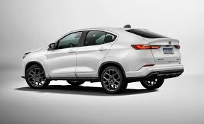
O Fiat Fastback é um SUV cupê compacto lançado no Brasil em agosto de 2022, desenvolvido no Polo Automotivo de Betim (MG) com foco no mercado sul-americano. Derivado do Fiat Pulse, o modelo se destaca pelo design com teto suave e porta-malas de 516 litros (VDA) Lançado no Brasil em maio de 2017, o Fiat Argo (projeto X6H) substituiu Palio, Punto e Bravo, consolidando-se como um hatch compacto de sucesso com mais de 600 mil unidades vendidas até 2025. Com design italiano e foco no conforto, o modelo evoluiu de diversas motorizações (1.0, 1.3, 1.8) para versões mais econômicas 1.0 e 1.3 Firefly.
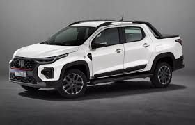
A Yamaha Crosser 150 é uma moto trail de entrada para uso misto (asfalto e terra) com motor monocilíndrico de \(149\) cc, freio ABS na dianteira e suspensões de longo curso.A Fazer 250 é uma motocicleta urbana e de uso misto, reconhecida por sua durabilidade, baixo consumo, tecnologia Blue Flex (gasolina e etanol) e sistema de freios ABS de série.A Fazer 250 é uma motocicleta urbana e de uso misto, reconhecida por sua durabilidade, baixo consumo, tecnologia Blue Flex (gasolina e etanol) e sistema de freios ABS de série.
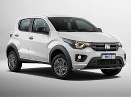
A Fazer 250 é uma motocicleta urbana e de uso misto, reconhecida por sua durabilidade, baixo consumo, tecnologia Blue Flex (gasolina e etanol) e sistema de freios ABS de série.A Fazer 250 é uma motocicleta urbana e de uso misto, reconhecida por sua durabilidade, baixo consumo, tecnologia Blue Flex (gasolina e etanol) e sistema de freios ABS de série.A Fazer 250 é uma motocicleta urbana e de uso misto, reconhecida por sua durabilidade, baixo consumo, tecnologia Blue Flex (gasolina e etanol) e sistema de freios ABS de série.A Fazer 250 é uma motocicleta urbana e de uso misto, reconhecida por sua durabilidade, baixo consumo, tecnologia Blue Flex (gasolina e etanol) e sistema de freios ABS de série.
honda
A Haojue é uma fabricante chinesa de motocicletas fundada em 1992, famosa por sua parceria de joint venture com a Suzuki desde então.
A Suzuki EN 125 Yes foi uma moto popular de entrada, lançada no Brasil de 2004 a 2011, conhecida por seu design urbano, economia e recursos como freio a disco dianteiro e indicador de marcha.A Haojue DK 150 é uma motocicleta urbana que combina desempenho econômico e praticidade, ideal para o uso diário. A Haojue NK 150 é uma moto trail urbana de baixa cilindrada, versátil para uso na cidade e em estradas de terra. A Haojue DR 250 é uma motocicleta bicilíndrica lançada na China em 2020, com motor de 250 cm³, 25 cv de potência e 2,4 kgf.m de torque.
toyota
A história da Shineray começou na China em 1991, inicialmente focada em motocicletas, e chegou ao Brasil em 2005, com o foco em modelos acessíveis como as ciclomotores "cinquentinhas", que se popularizaram no Nordeste por sua praticidade e custo.
A Shineray Worker 125 é uma moto de entrada acessível e econômica, com design retrô inspirado em modelos dos anos 60 e voltada para uso urbano e para o trabalho, A Shineray JEF 150s é uma moto street projetada para uso urbano, com bom custo-benefício, design moderno e vários recursosA Shineray SHI 175 é uma moto trail de entrada, disponível nas versões com injeção eletrônica (EFI) ou carburada, com motor monocilíndrico de 173,6 ccA Shineray 250F é uma moto de entrada com foco no design e em tecnologia, sendo uma alternativa acessível no segmento de médias cilindradas.